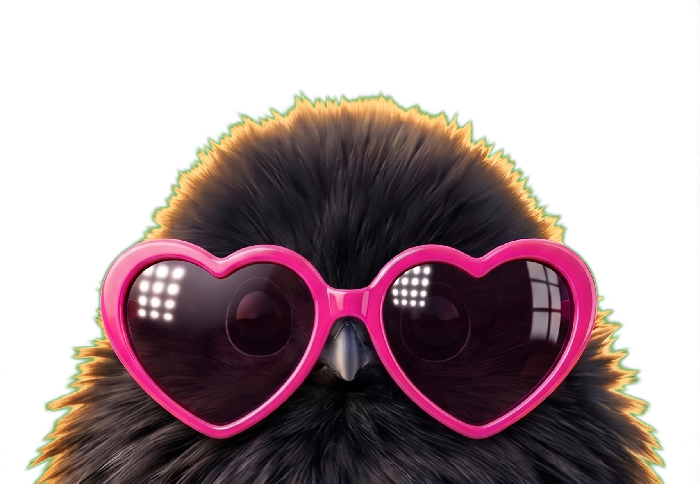
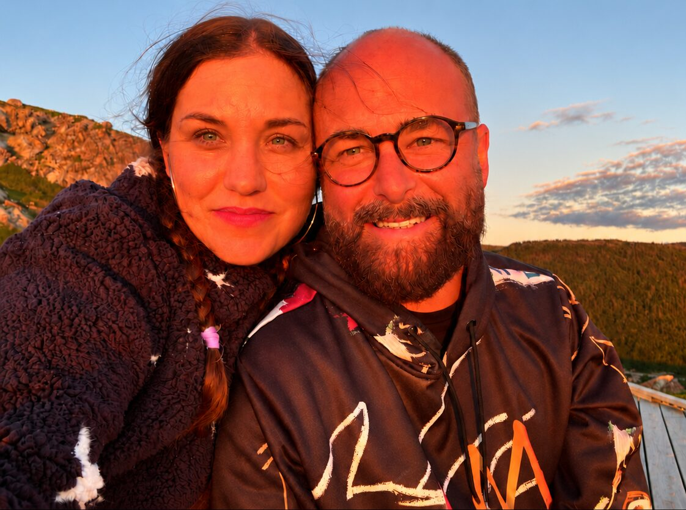

Why Cliick
Cliick began with a simple idea: to create an app that lets you share what you want with people you actually know, without being targeted for ads, having your personal data sold out from under you, or exposing your profile to a bunch of random strangers.
We hope you love Cliick as much as we do.
Family, friends, teammates — as long as you're connected in real life, you can add them to Cliick. By design, there's no way to search for user profiles. Cliick is invite only, to ensure the people in your feed are not only real people, but ones you actually know.
Cliick is algorithm free — everything you post is seen in the order it was posted. There's no noise to cut through. Because we don't want you scrolling forever, we just want to make connecting with the people you care about super easy.
Create private groups — or a "Cliick" — and invite only the people you want to share specific content with.
Create private groups — or a "Cliick" — and invite only the people you want to share that specific content with. Cliicks are private spaces that you define, so your grandmother doesn't see your Burning Man photos, and your friends don't see your grandmother's Burning Man photos.

Cliick isn't a business plan looking for a market. It's two people building the thing we wished existed — somewhere to keep up with our own families, our own friends, our own ordinary days, without handing all of it to an advertising platform.
"Sometimes the change you're waiting for is the one you have to build."
Nina & John